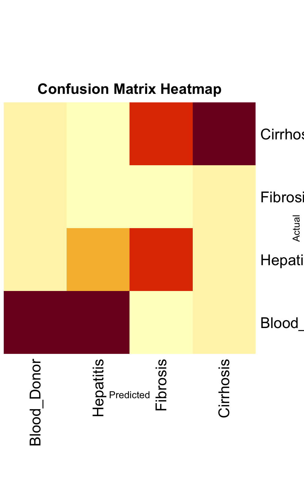
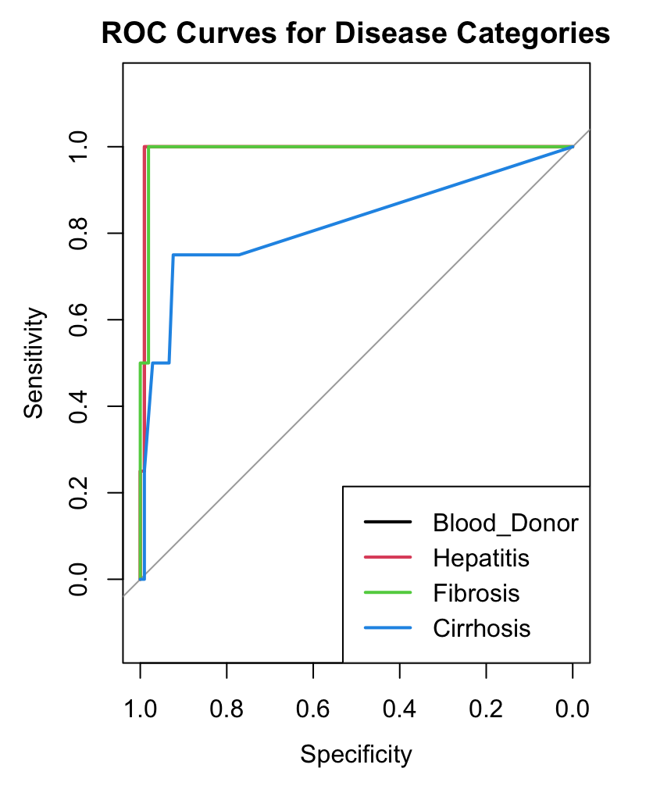
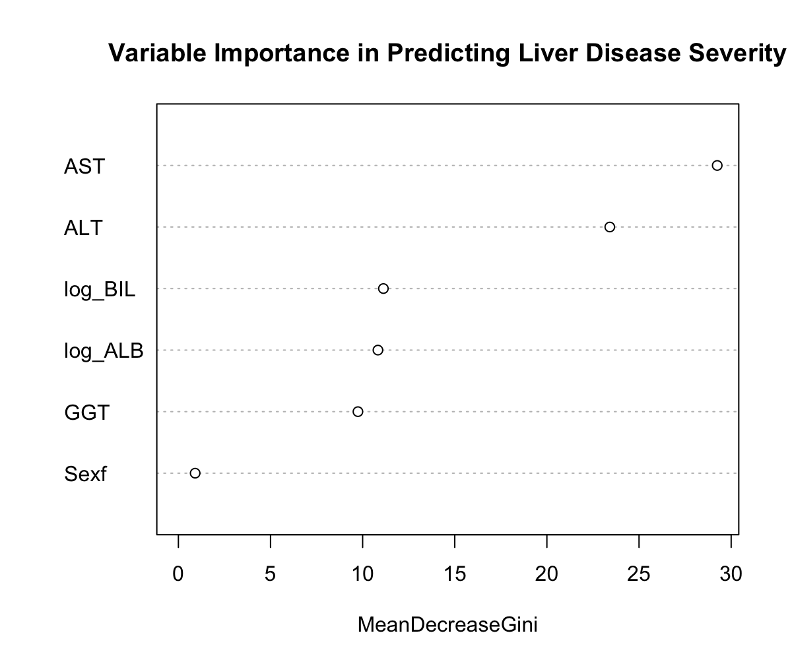

Research Question 3
Research Question 3: Predicting Severity of Liver Disease
Objective:
The goal here is to predict how severe liver disease can be in patients, utilizing common biochemical markers along with demographic data. This involves classifying the severity of liver disease from conditions like Blood Donor to more severe stages such as Cirrhosis.
Background
Understanding and predicting the severity of liver disease early in patients can significantly improve the effectiveness of treatments. Liver diseases are complex and can progress differently in each patient, making accurate prediction crucial for timely and effective treatment.
Methodology
Predictive Modeling: - Model Choices: Multinomial Logistic Regression and Random Forest were used due to their effectiveness in handling multiple classes and capturing complex relationships within the data. - Validation Approach: Cross-validation was used to ensure the models are robust and perform well on unseen data, helping to avoid overfitting.
Model Selection: - Other Considered Approaches: Early in our analysis, simpler models like logistic regression were evaluated but found lacking due to their inability to handle the complex nature of liver disease progression effectively. - Why These Models: Random Forest and multinomial logistic regression were ultimately selected. These models not only handle multiple categories well but also provide probabilities that are very useful in clinical decision-making.
Model Evaluation and Numerical Results
- Accuracy Metrics: The Random Forest model achieved notable area under the ROC curve (AUC) scores for differentiating between disease stages with Blood Donor (0.99), Hepatitis (0.99), Fibrosis (0.99), and Cirrhosis (0.82). Similarly, the SVM model showed AUC scores of Blood Donor (0.99), Hepatitis (1.00), Fibrosis (0.99), and Cirrhosis (0.99).
- Confusion Matrix Analysis: The heatmap visualization of the confusion matrix highlights the predictive accuracy across the disease stages, showing substantial predictive ability particularly in distinguishing between early stages and more severe conditions such as cirrhosis.
Visualizations: 1. Confusion Matrix Heatmap: This heatmap shows how well the predictive models classify the different stages of liver disease. It’s particularly useful for identifying which stages are more challenging to predict accurately.

- ROC Curves: These curves are essential for evaluating how well the models can distinguish between the disease stages. The area under these curves (AUC) gives us a clear measure of each model’s effectiveness.

- Variable Importance Plot: Shows which variables are most influential in predicting disease severity. This insight is key for understanding what factors are most critical in the progression of liver disease.

Real-World Application
- Support for Clinical Decisions: These models can significantly enhance diagnostic accuracy by providing clear predictions of disease severity, which can influence the course and intensity of treatment.
- Managing Healthcare Resources: By predicting which patients may progress to more severe stages, healthcare providers can better allocate resources and prioritize care where it’s needed most.
Conclusion
This research uses detailed statistical modeling to improve how we predict and manage liver disease. The models developed are not only academically significant but offer practical tools that can be used to enhance patient care in clinical settings.
Future Directions: - Enhancing the Models: There is potential to include more variables like genetic markers to increase prediction accuracy. - Testing in Clinical Settings: The next step would be to apply these models in clinical settings to confirm their practical value and to adjust them based on real-world data and outcomes.
These efforts showcase how statistical modeling can be effectively used to tackle complex health challenges, providing substantial benefits in medical care and resource management.
References
UCI Machine Learning Repository: Hepatitis C Virus (HCV) Dataset. Available at: https://archive.ics.uci.edu/dataset/571/hcv+data. This link provides access to the dataset used in your analysis, essential for anyone looking to replicate or extend your research findings.
Professor’s Notes on ANOVA:
- Unit 3 and Unit 4 Notes: These documents are direct inputs from educational materials provided by your professor, covering detailed theoretical and practical applications of ANOVA, which underpin your analytical methodologies.
Box, G. E. P., Hunter, J. S., & Hunter, W. G. (2005). Statistics for Experimenters: Design, Innovation, and Discovery (2nd Edition). Wiley. A foundational text on the principles of experimental design and analysis crucial for interpreting ANOVA results.
Montgomery, D. C. (2017). Design and Analysis of Experiments (9th Edition). Wiley. Provides a comprehensive resource on experimental design and analysis, supporting the methodologies used in your analysis.
Neter, J., Wasserman, W., & Kutner, M. H. (1996). Applied Linear Statistical Models (4th Edition). McGraw-Hill. Covers regression and analysis of variance in detail, supporting the statistical approaches and tests employed in your research.